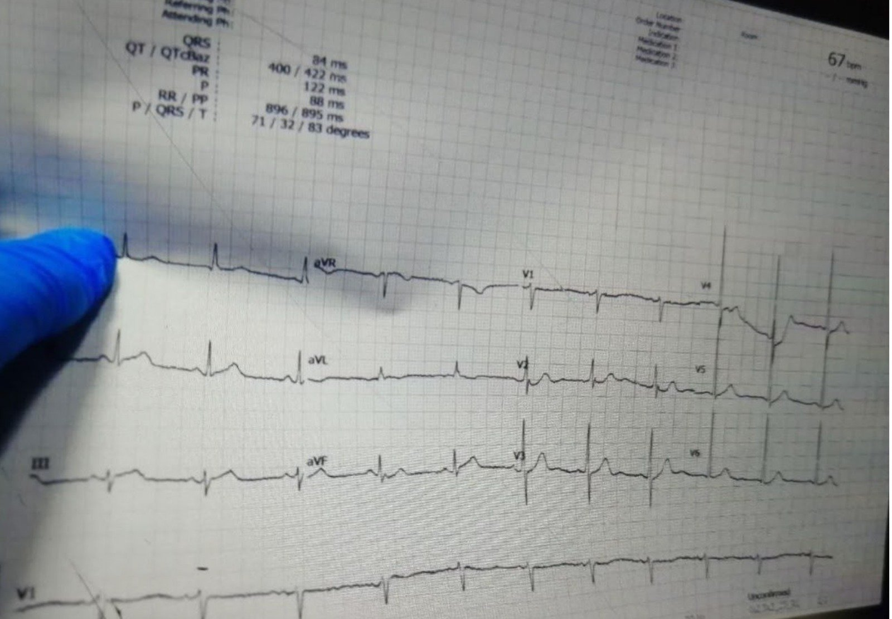
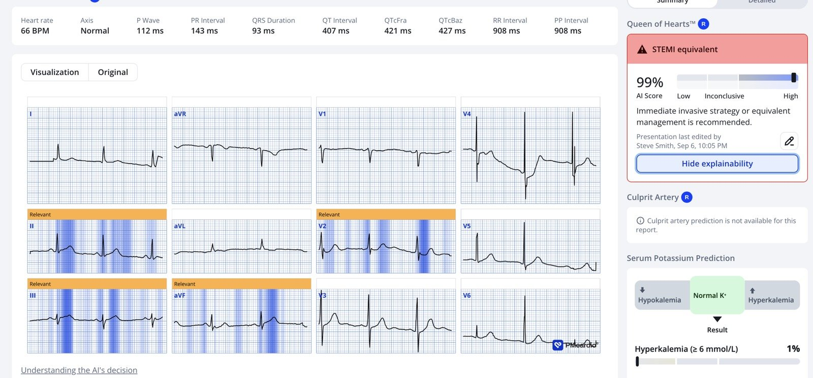
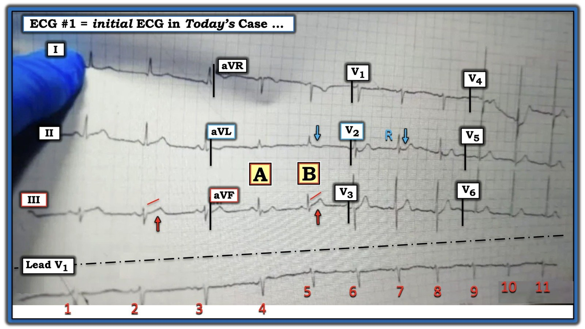

14/09/2026 — Những gì bạn nói với bệnh nhân rất quan trọng. Nhất là khi điều đó sai.
Bản dịch tiếng Việt của bài "What you tell a patient matters. Especially if it is incorrect." – Dr. Smith’s ECG Blog. Giữ nguyên toàn bộ 3 hình ảnh của bản gốc.


Bài viết của BS. Ahmed Marai, người vừa tốt nghiệp trường Y ở Iraq.
Smith và Grauer biên tập.
Một người đàn ông 45 tuổi, đang hút thuốc lá, không có tiền sử bệnh lý được biết, đến một bệnh viện ở vùng nông thôn vì đau ngực sau xương ức dữ dội, khởi phát đột ngột, lan lên vai trái, bắt đầu chưa đến một giờ trước khi nhập viện. Cơn đau kèm vã mồ hôi và buồn nôn. Bệnh nhân mô tả cơn đau ngực là cực kỳ dữ dội.
Các dấu hiệu sinh tồn của bệnh nhân trong giới hạn bình thường. Điện tâm đồ 12 chuyển đạo đầu tiên được ghi tại khoa cấp cứu. (Đáng tiếc đây là bản ghi có chất lượng tốt nhất có thể thu được).

= = =
Bạn nghĩ gì?
Điện tâm đồ này có giá trị chẩn đoán nhồi máu cơ tim do tắc (OMI) thành dưới. Có sóng T tối cấp (hyperacute) ở chuyển đạo III (bản thân nó không lớn, nhưng so với QRS nhỏ xíu thì nó rất “lớn”, “đồ sộ” và “phồng căng”, và thậm chí có biên độ cao một cách tương xứng. Có ST chênh xuống soi gương (reciprocal) và sóng T đảo ngược ở aVL. ST chênh xuống ở V2 và V3 ủng hộ mạnh mẽ OMI.
Điện tâm đồ này được các bác sĩ điều trị đọc là điện tâm đồ BÌNH THƯỜNG. Do bệnh cảnh lâm sàng rất đáng lo ngại, ngay cả khi không có điện tâm đồ, hội chứng vành cấp (ACS) vẫn được nghi ngờ. Bệnh nhân được xử trí bằng clopidogrel, heparin trọng lượng phân tử thấp tiêm dưới da và tramadol để giảm đau.
Sau đó cơn đau ngực của bệnh nhân hết (Smith: hết nhờ tramadol? KHÔNG dùng thuốc giảm đau để xử trí ACS cho đến khi bạn đã quyết định chuyển bệnh nhân vào phòng thông tim (cath lab)!)
Điện tâm đồ thứ hai được ghi, và được đọc là “tương tự điện tâm đồ đầu tiên”. (Đáng tiếc — Ahmed không lấy được bản sao của điện tâm đồ thứ 2 này.)
- LƯU Ý: Lúc nhập viện, bệnh nhân đang đau ngực dữ dội. Bệnh nhân ôm chặt ngực và mô tả cảm giác của mình là “đau ngực như bị đè nghiến”. Sau khi ghi điện tâm đồ — các bác sĩ điều trị đã sửng sốt khi thấy một điện tâm đồ có vẻ bình thường. Với mức độ triệu chứng nặng như vậy, họ đã chờ đợi sẽ thấy ST chênh lên đáng kể. Họ tự hỏi làm sao một bệnh nhân có thể đau ngực dữ dội như vậy mà điện tâm đồ lại bình thường.
= = =
Smith: Điện tâm đồ này không bình thường. Tôi đã gửi nó cho nhóm EKG Nerdz của chúng tôi mà không kèm thông tin gì, và mọi người đều nhận ra ngay đây là OMI dưới-sau.
- Dưới đây là kết quả đọc của mô hình AI điện tâm đồ PMCardio Queen of Hearts:


= = =
Vì vậy, lẽ ra phải kích hoạt phòng thông tim mà không cần chờ cả kết quả troponin.
Troponin I tim trong huyết thanh được xét nghiệm và có kết quả khoảng một giờ sau.
- Bệnh viện dùng xét nghiệm troponin I định tính — trả kết quả dương tính hoặc âm tính thay vì cung cấp nồng độ troponin định lượng. Kết quả trả về âm tính.
- Lúc đó, bệnh nhân đã hết đau. Bệnh nhân muốn về nhà vì nghĩ mình đã ổn. Dù các bác sĩ điều trị khuyên nhủ ở lại để đánh giá thêm — bệnh nhân vẫn từ chối, ký giấy xin ra viện và rời bệnh viện, tin rằng mình không còn nguy cơ gì nữa vì các bác sĩ đã nói với anh rằng điện tâm đồ của anh bình thường.
- Khoảng một giờ sau, bệnh nhân quay lại khoa cấp cứu trong tình trạng ngừng tim. Hồi sức không thành công, và bệnh nhân được tuyên bố tử vong.
- Nếu bạn nói với bệnh nhân rằng điện tâm đồ bình thường, và nói rằng xét nghiệm máu của họ bình thường, họ sẽ nghĩ mình ổn và có thể cưỡng lại mọi lời khẩn khoản giữ họ ở lại. Việc cho thuốc giảm đau góp phần tạo nên cảm giác an toàn giả tạo này!
- Xem bài này: What happens when you give morphine for chest pain in ACS? And what is pseudo-normalization of T-waves?
= = =
==================================
BÌNH LUẬN CỦA TÔI, bởi KEN GRAUER, MD (14/9/2026):
Như đã bàn ở trên — Bệnh nhân hôm nay là một người đàn ông 45 tuổi, đến viện với bệnh sử 1 giờ CP sau xương ức dữ dội “như bị đè nghiến” (Chest Pain – đau ngực), kèm buồn nôn và vã mồ hôi.
- Như thấy rõ qua phần bàn luận ở trên về ca hôm nay — các nhân viên y tế đã nhận ra rằng chỉ riêng bệnh sử đơn giản này (đau ngực “như bị đè nghiến” dữ dội, mới xuất hiện) đã ngay lập tức xếp bệnh nhân vào nhóm nguy cơ cao có biến cố tim cấp.
- Điều mà các nhân viên y tế chưa nhận thức đầy đủ — là vì bệnh nhân hôm nay thuộc nhóm nguy cơ cao hơn — chúng ta cần hạ thấp ngưỡng để xác định thế nào là một điện tâm đồ “bất thường”.
- LƯU Ý: Như đã nhấn mạnh nhiều lần trên Dr. Smith’s ECG Blog — troponin độ nhạy cao (hs-troponin) lần đầu có thể âm tính dù bệnh nhân đang bị nhồi máu cơ tim do tắc cấp.
- Giá trị troponin độ nhạy cao lần đầu âm tính ở bệnh nhân tắc động mạch vành cấp xảy ra thường gặp hơn nhiều so với suy nghĩ của nhiều nhân viên y tế!
= = =
Điện tâm đồ đầu tiên hôm nay: Những thách thức kỹ thuật
Thực tế lâm sàng là chất lượng kỹ thuật của một điện tâm đồ trong tình huống cấp không phải lúc nào cũng tối ưu. Có nhiều lý do cho điều này, bởi một bệnh nhân cấp cứu có thể đang khó thở, hoặc đang đau dữ dội, bồn chồn, kích động, run lạnh, run rẩy, hoặc vì lý do khác mà không thể nằm yên.
- Theo một chân lý quen thuộc trong ngành CNTT: “Dữ liệu vào kém = dữ liệu ra kém”. Dù vậy, thực tế lâm sàng là vì nhiều lý do khác nhau — không phải lúc nào cũng có thể có bản ghi điện tâm đồ chất lượng tối ưu. Ca hôm nay là một ví dụ sâu sắc về cách tận dụng tốt nhất những gì chúng ta có!
Trong số những thách thức kỹ thuật ở bản ghi hôm nay có những điểm sau:
- i) Bản ghi bị nghiêng rõ rệt (phần 12 chuyển đạo nghiêng xuống — còn dải nhịp chuyển đạo dài nghiêng lên, như thấy trong Hình 1). Điều này làm sai lệch đáng kể các phép đo — cũng như làm sai lệch việc chọn đường nền đoạn ST để từ đó xác định ST chênh lên hay chênh xuống (Về cơ bản, chúng ta không bao giờ thấy một chuỗi nhát liên tiếp có đường nền nằm ngang ổn định).
- ii) Ngoài việc bản ghi ở Hình 1 bị nghiêng rõ rệt — còn có nhiễu tác động lên 2 phức bộ QRS thấy ở các chuyển đạo chi tăng thế ghi đồng thời ( = nhát #4 và 5 — mà tôi đã đánh dấu “A” và “B” ). Điều này đặt ra câu hỏi nhát nào (A hay B?) thể hiện sóng ST-T thật ở chuyển đạo aVF?
= = =
Suy nghĩ của tôi về Hình 1:
Ở Hình 1 — Hãy chú ý hiện tượng trôi đường nền ở dải nhịp chuyển đạo dài V1 phía dưới bản ghi. Sự biến dạng của bản ghi này rõ rệt đến mức — tôi ngờ rằng nhịp nhìn chung khá đều, bất chấp sự chênh lệch có vẻ rõ rệt giữa các khoảng R-R của 11 nhát trên bản ghi này.
- Nhưng — Hãy chú ý rằng đường nền ở dải nhịp chuyển đạo dài đã trở nên gần như nằm ngang bắt đầu từ nhát #5. Điều này ủng hộ nhận định của tôi rằng nhát #5 ( = phức bộ “B” ở Hình 1) thể hiện hình dạng thật của sóng ST-T ở chuyển đạo aVF.
- Giả định này hợp lý — vì đoạn ST thẳng đuỗn kèm ST chênh lên kín đáo-nhưng-có-thật mà chúng ta thấy ở “B” trong chuyển đạo aVF trông giống hệt hình dạng sóng ST-T của nhát #2 ở chuyển đạo III.
- Và — phức bộ “B” ( = nhát #5) ở chuyển đạo aVL gợi ý một hình ảnh hoàn hảo của ST chênh xuống soi gương (mũi tên XANH ở chuyển đạo aVL) — điều mà ở bệnh nhân đau ngực mới xuất hiện “như bị đè nghiến” này gần như khẳng định OMI thành dưới cấp!
- Như tôi luôn làm khi cân nhắc khả năng (trong ca này là xác suất cao) OMI thành dưới cấp — tôi tìm các thay đổi QRST có thể có của OMI thành sau (vì ở phần lớn bệnh nhân, thành dưới và thành sau thất trái có chung nguồn cấp máu nên OMI thành dưới và thành sau rất thường xảy ra cùng nhau).
- Dấu hiệu điện tâm đồ của OMI thành sau cấp thể hiện ở chuyển đạo V2 qua: i) Mất đi đoạn ST chênh lên nhẹ, dốc lên mà bình thường ta vẫn thấy ở chuyển đạo V2 (mũi tên XANH ở chuyển đạo này); — và, ii) Sự hiện diện của sóng R ưu thế ngay từ chuyển đạo V2 (sóng R ưu thế này là “tương đương” sóng Q trong OMI thành sau).
= = =
Hình 1: Tôi đã sao lại và đánh dấu điện tâm đồ hôm nay.


= = =
Những khái niệm cuối cùng:
Các nhân viên y tế trong ca hôm nay đã khó chấp nhận việc một bệnh nhân đau ngực mới xuất hiện dữ dội như vậy lại có một điện tâm đồ “trông bình thường” như thế.
- Như BS. Marai đã nêu — Điện tâm đồ hôm nay không bình thường. Trái lại, ở bệnh nhân đau ngực dữ dội mới xuất hiện này — nó có giá trị chẩn đoán OMI dưới-sau cấp cho đến khi chứng minh được điều ngược lại (và phải đưa đi thông tim ngay để can thiệp mạch vành qua da (PCI) ).
- Những lý do khiến một điện tâm đồ đôi khi trông tương đối bình thường dù đang có tắc động mạch vành cấp là: i) Đơn giản là “vì thế” (tức là, Vì đôi khi điều này vẫn xảy ra); — ii) Vì “cái đẹp nằm trong mắt người nhìn” (Điều mà các nhân viên y tế trong ca này thấy là “bình thường” thì lại không “bình thường” trong mắt một chuyên gia đọc điện tâm đồ); — và, iii) Vì trong diễn tiến bình thường của tắc động mạch vành cấp — thường có một giai đoạn giả bình thường hóa trong đó điện tâm đồ có thể trông tương đối “bình thường” (tức là, nếu điện tâm đồ được ghi vào khoảng giữa giai đoạn ST chênh lên ban đầu và giai đoạn tái tưới máu, khi sóng ST-T chênh xuống và sóng T đảo ngược).
ĐIỂM THEN CHỐT (PEARL) #1: Một manh mối lâm sàng quá-thường-bị-bỏ-qua cho thấy bệnh nhân của bạn có thể đang ở giai đoạn “giả bình thường hóa” — là khi vào thời điểm ghi một điện tâm đồ nào đó, cơn đau ngực của bệnh nhân đã giảm hoặc đã hết.
- Nhưng nếu bạn không thường quy hỏi bệnh nhân về sự hiện diện và mức độ tương đối của triệu chứng mỗi lần ghi điện tâm đồ — thì bạn sẽ không bao giờ tận dụng được thông tin vô giá có được khi đối chiếu từng điện tâm đồ đã ghi với sự hiện diện và mức độ đau ngực của bệnh nhân.
- Và sau khi hỏi bệnh nhân về triệu chứng — Hãy ghi điều này ngay trên chính điện tâm đồ (tức là, rằng mức đau ngực của bệnh nhân vẫn là 9/10 hay 1/10 hay bất kể mức nào vào thời điểm ghi điện tâm đồ đó). Bởi vì, nếu bạn không ghi điểm đau của bệnh nhân lên điện tâm đồ — thực tế lâm sàng là về sau bạn sẽ không bao giờ biết được cơn đau ngực của bệnh nhân đang tăng, giảm hay không đổi vào thời điểm ghi điện tâm đồ đó.
ĐIỂM THEN CHỐT (PEARL) #2: Dù điểm then chốt tiếp theo này tưởng như hiển nhiên — nó lại quá-thường bị bỏ qua. Nếu vì bất kỳ lý do gì mà có “những thách thức kỹ thuật” khi đọc một điện tâm đồ ở bệnh nhân nghi ngờ OMI (dù là do trôi đường nền, nhiễu, bệnh nhân cử động hay nguyên nhân khác) — Đơn giản là hãy ghi lại điện tâm đồ ngay lập tức!
- Tôi luôn thất vọng vì việc này không được làm thường xuyên đến thế nào. Phần lớn các trường hợp, khi bạn nhắc kỹ thuật viên thử lại bằng cách ghi lại điện tâm đồ ngay — bạn sẽ có thể cải thiện chất lượng kỹ thuật đủ để giúp việc đọc đáng tin cậy hơn (và bạn sẽ truyền đạt cho kỹ thuật viên sự cần thiết phải tự động thử lại khi có những thách thức kỹ thuật, để luôn có được bản ghi “tốt nhất có thể” cho việc đọc của bạn).
= = =
= = =